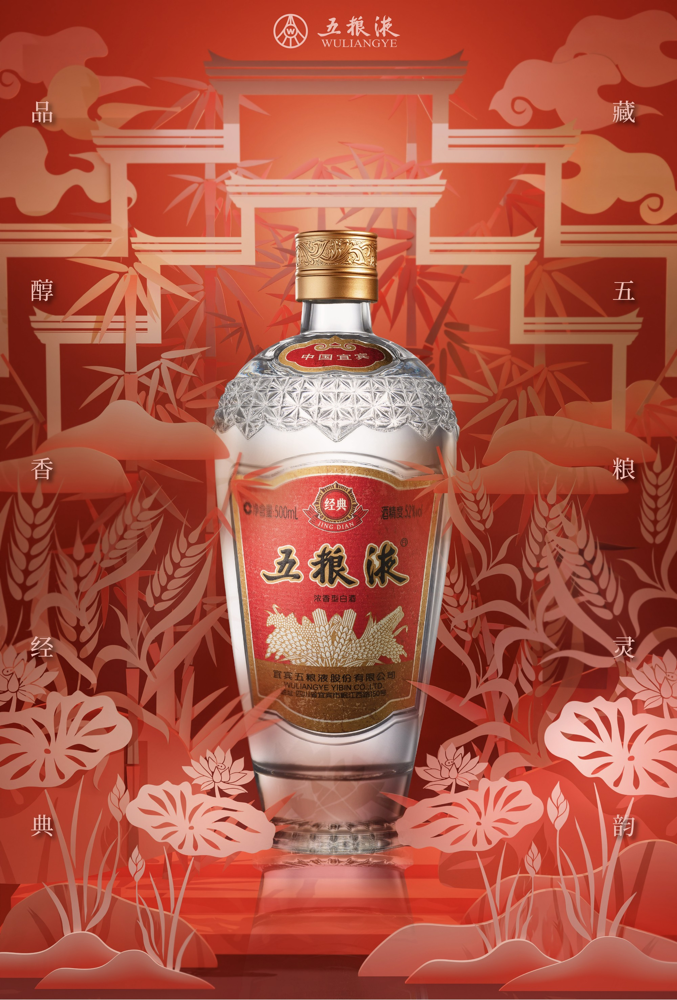
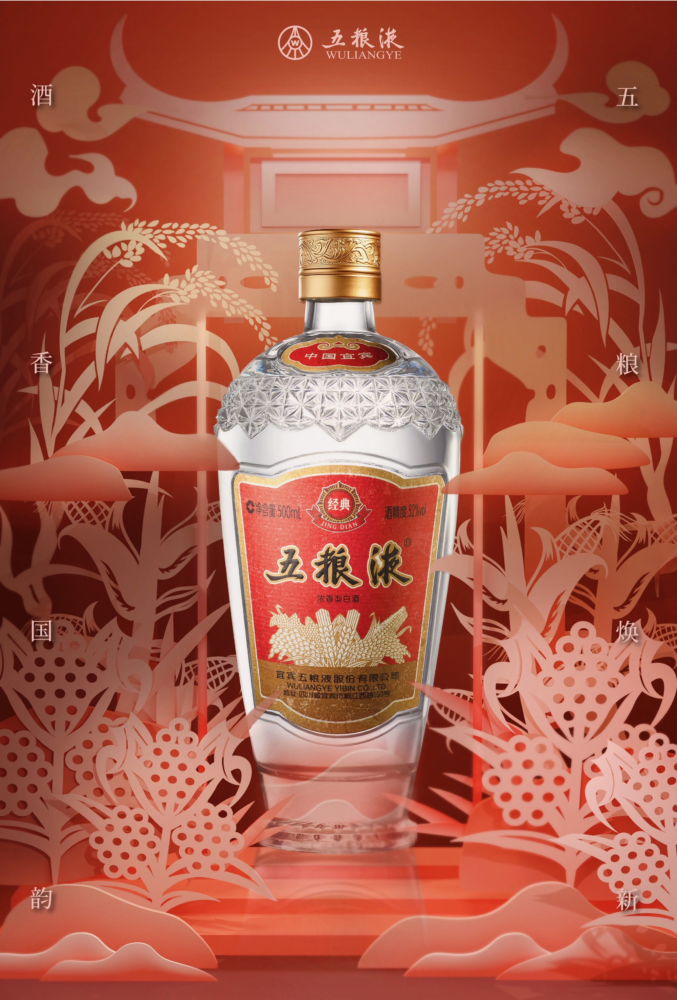
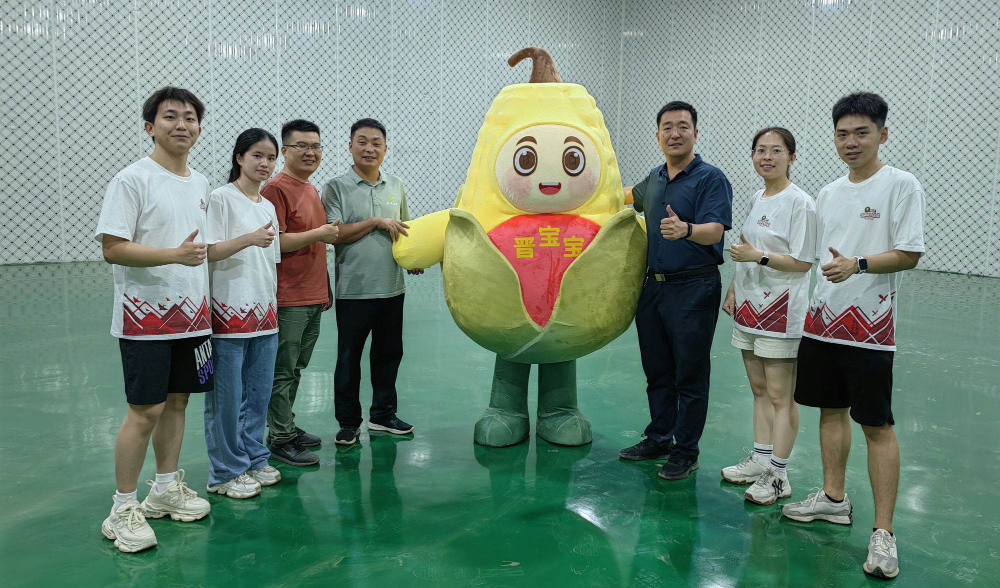
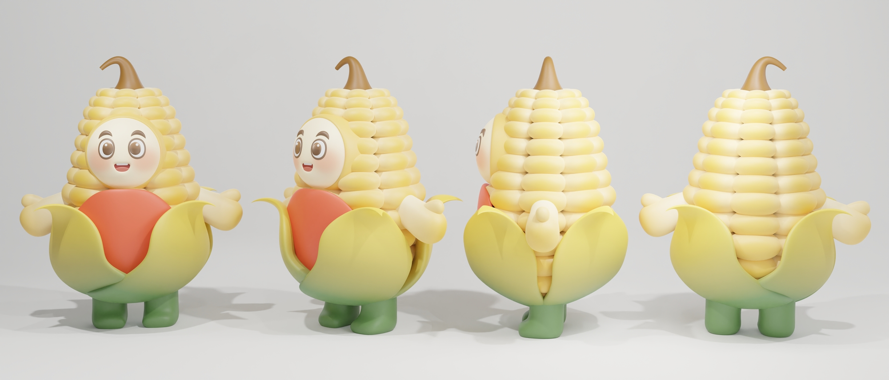

Wuliangye Cultural and Creative Poster Design / Fangshan County Tourism Corn IP Design (2024)


This project is a poster design for the Wuliangye brand.
This poster combines Wuliangye's brand spirit with traditional Chinese paper-cutting.
3D technology brings depth to elements like grains, drums, and architecture.
Red and gold tones reflect a refined blend of tradition and modernity.
Wuliangye Brand Family IP Design
Inspired by Wuliangye's five core grains—sorghum, rice, glutinous rice, wheat, and corn—this project creates five unique IP characters, each embodying the brand's story of grain harmony and distinctive identity.

Wuliangye's corn-themed IP character, "Jin Baobao," represents the spirit of abundance and growth.
The character is also extended to support the poverty alleviation project in Fangshan County by Beijing Institute of Technology.


The project has been successfully implemented and received positive feedback in Fangshan county.

Sincere thanks to Associate Professor Zhang Honghai for his invaluable guidance on the project.
All content is original. Unauthorized reproduction and plagiarism in any form are strictly prohibited.
所有内容均为原创，禁止未经授权搬运，禁止任何形式的抄袭。